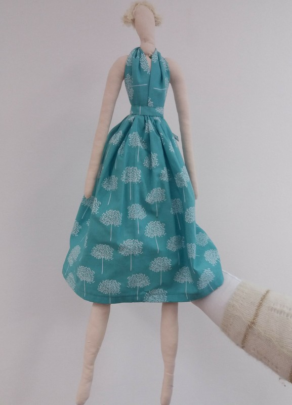
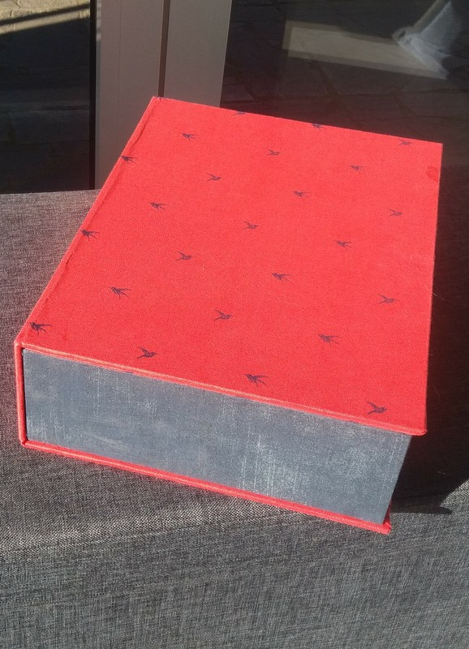

Ik heb 2 grote hobby's: naaien en het bakken van desserts. Het naaien is begonnen in de tekenschool, ik heb daar een aap gemaakt en een ontbijtjurk. In het zesde leerjaar ben ik dan begonnen met het sparen voor een naaimachine. 5 jaar later naai ik nog steeds, ik maak vooral hebbedingetjes. Ik volg nog steeds naailes bij de citadel, dit is 1 keer in de maand. Daarbuiten volg ik soms nog eens workshop bij crealief. Ik heb al enorm veel projecten voltooid. Momenteel ben ik bezig met het maken van een pop en een valiesje. Onlangs heb ik ook een les kartonnage gevolgd en maakte ik een kartonnen doos bekleed met stof. Ik bak voornamelijk thuis, en dat zijn vooral taarten,cakes, koekjes, ... . Mijn oma eet mijn bresielienne taart het liefst.
|  | De foto links is mijn pop, deze is nog niet helemaal af. De doos aan de rechterkant bestaat uit karton, waarvan het karton is bekleed met stof. |  |